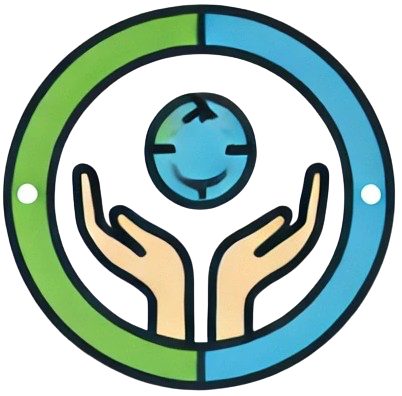

Comunidad Conectada
 (+55) 2299 6212 Soporte
(+55) 2299 6212 Soporte
(+55) 2299 6212 Soporte
(+55) 2299 6212 Soporte
Facilitando el acceso a los recursos esenciales de la comunidad.
El mapa interactivo facilita a los usuarios encontrar recursos disponibles en su comunidad, mejorando el acceso a servicios básicos como alimentación, salud y apoyo económico. Nuestra misión es garantizar que cada familia tenga acceso fácil y rápido a los recursos que necesita para mejorar su calidad de vida.
Utiliza el mapa para buscar recursos específicos. Puedes hacer clic en las ubicaciones para obtener más información y aplicar los filtros para personalizar tu búsqueda.
Lugares donde se brinda comida gratuita o a bajo costo para familias vulnerables. Encuentra comedores comunitarios cercanos y accede a alimentos nutritivos.
Ubicaciones de centros de salud, clínicas y hospitales que ofrecen servicios gratuitos o a precios accesibles.
Sitios donde los usuarios pueden donar o recibir recursos como alimentos, ropa, medicinas, y otros artículos esenciales.
Pequeños productores que venden alimentos frescos a precios accesibles, fomentando el consumo local y la sostenibilidad comunitaria.
El mapa permite a los usuarios interactuar haciendo clic en diferentes ubicaciones para obtener información detallada de cada recurso. Utiliza los filtros disponibles para categorizar los recursos por tipo (alimentación, salud, ayuda económica) y encuentra rápidamente lo que necesitas. Además, puedes ver los recursos más cercanos a tu ubicación actual para facilitar la accesibilidad.
María, una madre de dos niños, encontró un comedor comunitario cercano que ofrece comida nutritiva diariamente. Gracias a nuestro mapa, ella pudo acceder rápidamente a este recurso que ha hecho una gran diferencia en su vida.
El mapa ayuda a maximizar la eficiencia de los recursos comunitarios, conectando a las familias con los servicios esenciales de manera rápida y sencilla. Promueve la colaboración entre la comunidad y las organizaciones locales, asegurando que ningún recurso quede sin ser utilizado y que todas las familias tengan acceso a los servicios básicos.